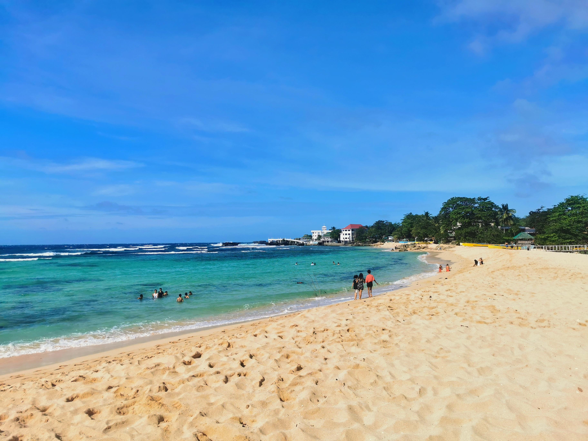
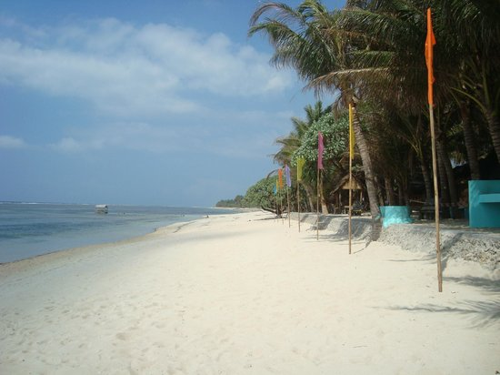
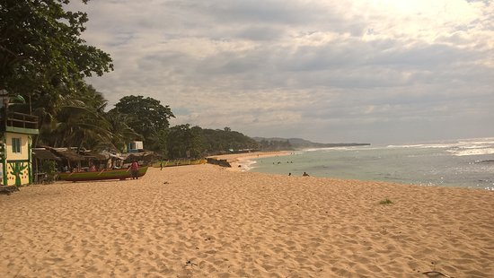
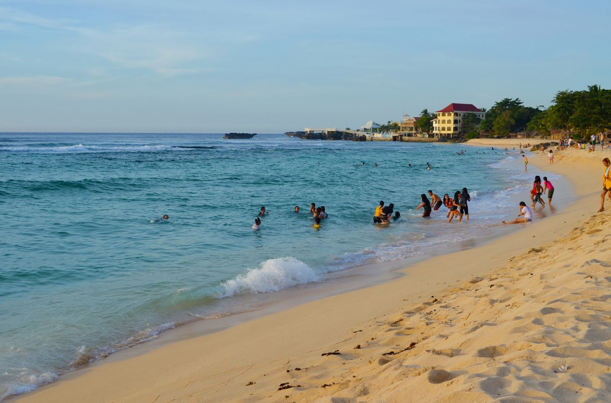

Patar Beach is a renowned destination located in the town of Bolinao, Pangasinan, Philippines.
Bolinao area was inhabited by indigenous tribes, particularly the Pangasinense people. These indigenous communities had established settlements along the coast and engaged in fishing, farming, and trade.
With increased tourism comes the importance of environmental conservation and sustainable management of natural resources. Efforts have been made to preserve the ecological integrity of Patar Beach and its surrounding marine ecosystems through initiatives such as beach clean-up drives, marine biodiversity conservation programs, and responsible tourism practices.